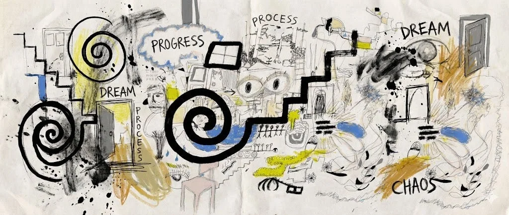

Writing /
Why AI Can’t Be a Feature (and Why Most Products Get This Wrong)

Right now it feels like every product has AI. AI features, AI copilots, AI assistants tucked into side panels. On paper it looks like progress, but once you actually use a lot of these tools, it starts to feel shallow. Not because the models aren’t impressive, but because the products themselves weren’t built for what AI actually changes.
Most legacy tools were designed around static workflows. Fixed fields. Clear inputs and outputs. Humans doing the thinking while software just tracks the work. When AI gets introduced into those systems, it usually shows up as a layer on top of everything that already exists. You get a summarize button, a generate button, maybe a rewrite option. Helpful sometimes, sure, but rarely transformative. It feels like garnish. And garnish doesn’t change the meal.
The thing I keep coming back to is that AI isn’t just another feature. It changes how a product reasons about work. If the foundation wasn’t designed for learning, context, or ambiguity, AI can only react to what’s put in front of it in that moment. It produces an output and then disappears. No memory. No learning. No connection between decisions and outcomes.
That’s the difference I see over and over again:
- AI that reacts vs AI that remembers
- AI that generates vs AI that understands
- AI that speeds things up vs AI that actually makes things better
Project management tools are a good example. Most were built to track tasks and deadlines. When AI gets added, it helps you write tasks faster or summarize what already happened. Useful, but the system still has no idea why the work exists or whether it worked. An AI-first approach would look at the full arc - the conversation that led to the work, the decisions that shaped it, and what happened once it shipped. Without that context, AI can’t really help you think. It can only help you document.
Creative and content tools have a similar issue. A lot of AI-generated content feels generic not because the models are bad, but because the tools don’t know anything about the brand, the audience, or what’s worked before. They’re forced to average. When products are designed with AI intent, briefs stop being static docs, strategy stops being throwaway text, and performance stops living somewhere else. All of it becomes part of the system’s memory.
You can usually tell when AI was bolted on because teams end up compensating for it:
- better prompts
- more regenerations
- lots of tweaking
- quiet distrust of the output
The novelty wears off, and AI becomes another tool people half-use. That’s not a user failure, it’s a design failure.
The products that will last are built around a few simple ideas:
- context should persist
- decisions should be traceable
- outcomes should inform what happens next
That requires more than slapping a chatbot onto an old workflow. It means designing for uncertainty, learning over time, and letting the product evolve alongside the people using it.
We’re still early, which is why everything feels noisy right now. Legacy tools are scrambling to stay relevant, and newer products are experimenting with what “AI-native” even means. Over time, the difference will be obvious. Some tools will help you work faster. Others will actually help you work better.
AI isn’t something you ship and move on from. It’s something you design around. And whether you did that or not shows up everywhere.